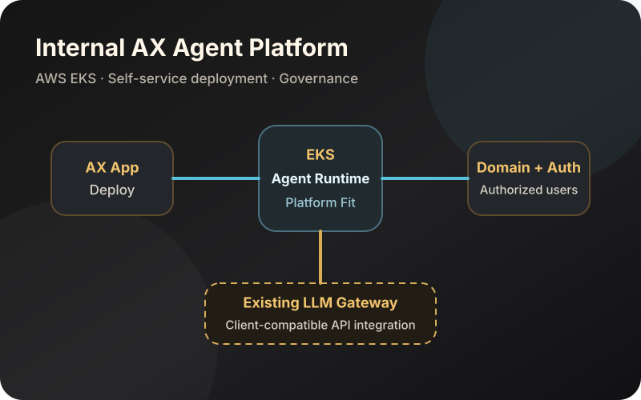

사내 AX Agent Platform
AWS EKS에서 에이전트 런타임을 사내 배포 표준에 맞게 조정하는 플랫폼을 설계·구축했습니다. 개발자는 AX App을 배포하면 도메인을 자동으로 발급받고, 인가된 사용자만 접근하도록 설정하며, 플랫폼 연동을 통해 기존 사내 LLM Gateway API를 사용할 수 있습니다.
- 담당
- 아키텍처, 구현, 배포 및 운영
- 통제
- 인증, 인가, 보안 및 거버넌스
- 기술
- AWS EKS, Kubernetes, 런타임·API 연동